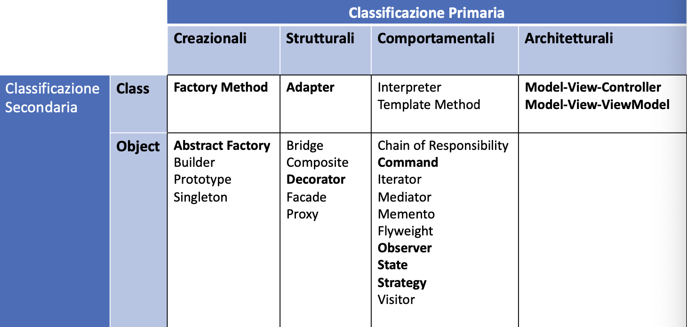

Classificazione dei Design
Pattern
Categorie di Design Pattern
Esistono quattro categorie di Design Pattern:
- Design Pattern Creazionali
- Design Pattern Strutturali
- Design Pattern Comportamentali
- Design Pattern Architetturali
Vediamo ora nel dettaglio come si distinguono queste quattro
categorie.
Pattern Creazionali
I pattern creazionali definiscono metodologie per la creazione di
oggetti.
Le loro caratteristiche fondamentali sono le seguenti:
- Devono gestire la dipendenza tra creatore e creato a compile
time
- Devono limitare il numero di istanze di una classe
- Devono utilizzare la clonazione
- Devono gestire la creazione di tipi complessi e fortemente
parametrici
Pattern Strutturali
I pattern strutturali gestiscono la composizione di oggetti e la
separazione tra interfaccia ed implementazione.
Le loro caratteristiche fondamentali sono le seguenti:
- Devono utilizzare interfacce esterne
- Devono comporre oggetti a runtime
- Devono gestire l’accesso ad una moltitudine di oggetti
- Devono uniformare l’accesso ad oggetti semplici e composti
Pattern Comportamentali
I pattern comportamentali definiscono il comportamento e le modalità
di interazione tra oggetti.
Le loro caratteristiche fondamentali sono le seguenti:
- Devono gestire la dipendenza nelle funzionalità tra classi e
sottoclassi
- Devono tener traccia delle azioni compiute da un oggetto
- Devono definire comportamenti diversi per oggetti definiti in una
gerarchia
- Devono modificare il comportamento di un oggetto a runtime
Pattern Architetturali
I pattern architetturali definiscono metodologie per la creazione di
applicazioni e sistemi software e sono spesso alla base di
framework.
Le loro caratteristiche fondamentali sono le seguenti:
- Devono separare modello e view
- Devono gestire la comunicazione tra i diversi livelli logici di un
sistema
Classificazione secondaria
I Design Pattern possono essere ulteriormente divisi in due
categorie:
- Class Pattern: definiscono comportamenti e
relazioni statiche tra classi rilevanti a compile time
- Object Pattern: definiscono comportamenti e
relazioni tra oggetti a runtime e tengono conto della dinamicità degli
oggetti
Design Pattern Noti

Ritorna alla Home